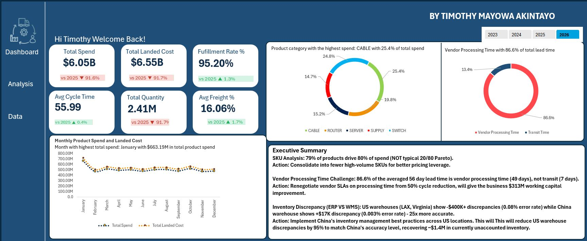
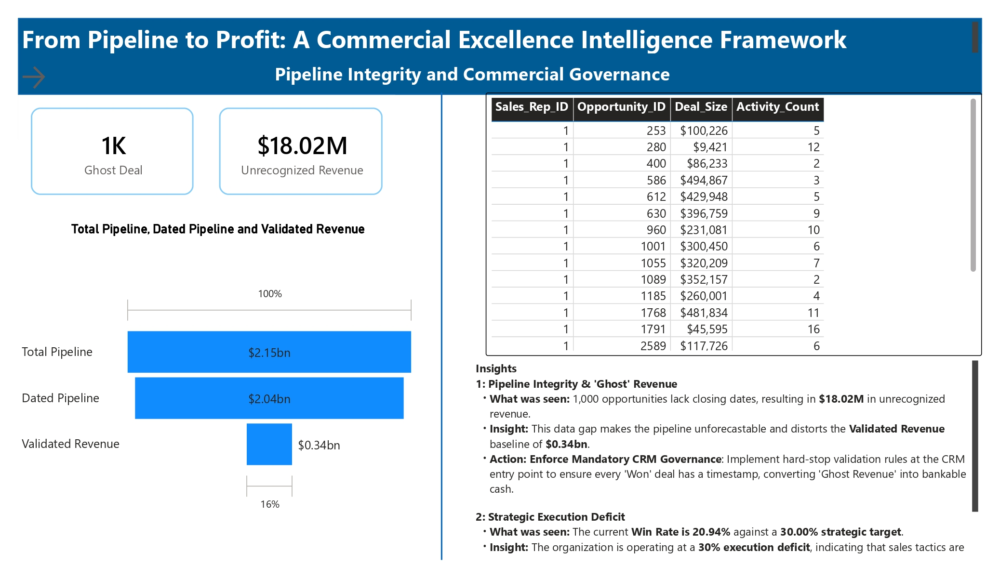
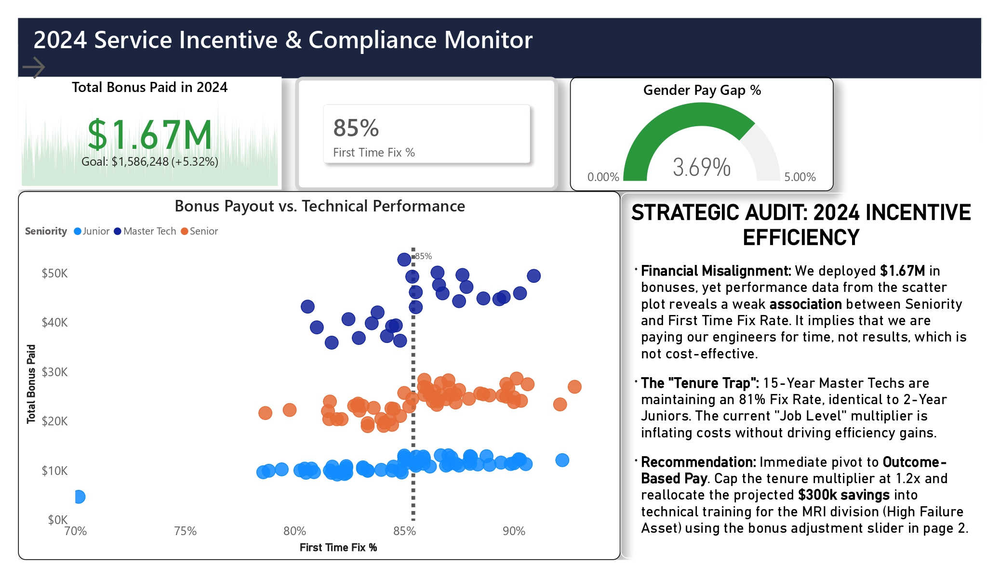
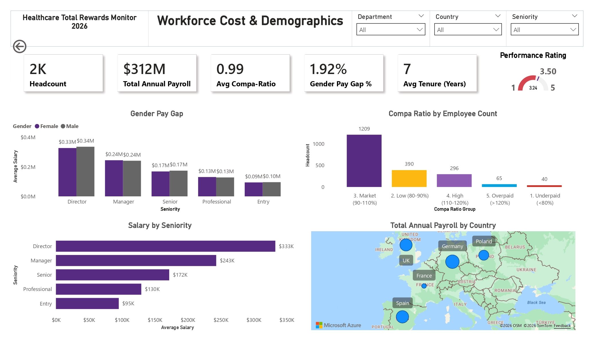

Analyzed $6.5B procurement spend across 200+ products, 10 countries, and 8 warehouses to identify cost optimization opportunities. Built Excel Power Pivot model with 25+ DAX measures revealing that 87% of 56-day procurement cycle was vendor processing (not logistics), creating $300-400M working capital improvement opportunity. Identified inventory accuracy crisis: US warehouses showed 2-3x higher discrepancies than Asian sites despite managing identical volumes. Discovered $4.34B aged inventory distributed evenly across locations signaling systemic over-ordering. Built automated variance decomposition analysis isolating cost increase drivers: volume effect 66%, vendor price increases 26%, tariff changes 8%.


Audited a $2.15B CRM pipeline and found the business could only act on $344M of it. Built a 7-page Power BI intelligence framework exposing $18M in ghost revenue — 1,000 Won opportunities with no close date, invisible to the CFO and unauditable. Diagnosed a 30% execution deficit: win rate at 20.94% against a 30% strategic target, with 20% average discounts that were not closing deals. Identified $446M in stalled pipeline — deals exceeding 180 days with no forward movement. Modelled a $195M revenue unlock from a 9% win rate improvement using a live scenario simulation built directly from existing pipeline data. Pareto analysis revealed 80% of validated revenue concentrated in 21% of accounts — a prioritisation problem, not a portfolio problem.

Built service operations dashboard analyzing 12,000+ service records for healthcare equipment provider. Created star schema data model connecting technician, equipment, and time dimensions. Identified tenure-based compensation patterns where 15-year Master Technicians showed identical 81% fix rates to 2-year Juniors despite higher pay. Built dynamic scenario planning tool using DAX parameter tables enabling real-time compensation modeling. Mapped equipment lifecycle patterns revealing Year-6 vulnerability (87% → 83% fix rate drop). Portfolio project demonstrating data modeling and operational analytics capabilities.

Analyzed $312M payroll across 2,000 employees and uncovered systemic compensation failures: employees trapped at Entry Level for 7+ years, a high-earning IT Director with performance rating of 2/5, and 40 employees (18 high-performers) paid below 80% market rate. Built Power BI model using nested DAX iterations to compare compensation within job levels, validating 1.92% gender pay gap (below 5% EU threshold). Exposed fundamental disconnect between stated "pay-for-performance" culture and actual compensation patterns. Portfolio project demonstrating pay equity analytics using synthetic HR data.

Analyzed 10,000 café transactions revealing cash payment friction (33% of high-value purchases during peak hours) and upselling gaps (50% of customers spending only $4-$12). Built Excel dashboard using Power Query, Power Pivot, and DAX to identify payment behavior patterns, seasonal trends, and channel preferences. Portfolio project demonstrating retail analytics and business recommendation frameworks.

Built Purchase Request & Approval System using Microsoft Power Platform (PowerApps, Power Automate, SharePoint), eliminating paper-based processes and approval bottlenecks through first-to-respond logic. Solved technical challenges including Office 365 user integration and group email notification delivery. Avoided typical $15K-50K/year ERP costs while providing mobile access, real-time tracking, and complete audit trails using existing Microsoft 365 licenses.

Built production ELT pipeline analyzing 22,507 NYC elevator complaints to identify strategic opportunities for building maintenance companies. Geospatial analysis revealed 41.5% of demand concentrated in the Bronx, with optimal headquarters location at coordinates 40.822139, -73.940240 (57 complaints in single geographic bin). Exposed 52-day average resolution gap and identified HVAC cross-sell potential (19,961 complaints in 2022) through historical trend analysis. Used Python, DuckDB, and SQL to process complaints in under 2 minutes with automated data quality validation.